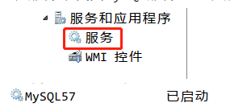
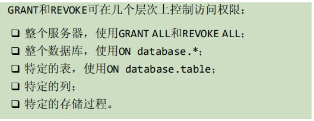
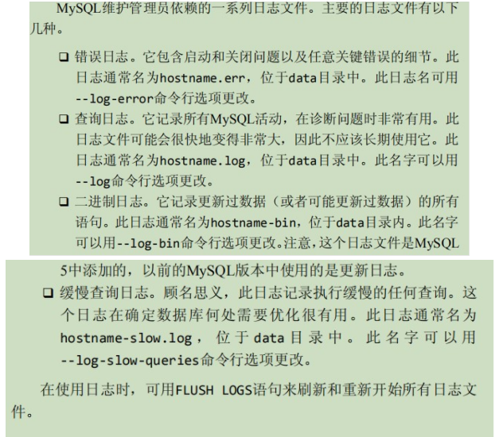

MySql–学习笔记(包含MySQL视频、MySQL必知必会书籍)
Lesson1 MySQL概述
NO1.1 数据库和SQL
简单讲，数据库就是存储数据的；SQL则是用于操作关系型数据库的一门编程语言。
- 数据库：即database(简称DB)，是一种存储数据的仓库。
- 特点：
- 数据库是根据数据结构组织、存储和管理数据；
- 数据库能够长期、高效的管理和存储数据；
- 数据库的目的就是能够存储(写)和提供(读)数据。
- 早期按存储模型分类为：
- 层次数据库：基于层次的数据结构(数据分层)；
- 网状数据库：基于网状的数据结构(数据网络)；
- (目前最流行)关系数据库：基于关系模型的数据结构(二维表)。
- 现在按存储介质分类：
- 关系型数据库：基于关系模型的数据结构(二维表)通常存储在磁盘。关系型数据库系统(DBS)模型有四层结构：
- 数据库管理系统(DBMS)：管理系统运行(DataBase Management System)；DBMS又分为两类：
- 基于共享文件系统的DBMS(如，ACCESS)；
- 基于客户机-服务器的DBMS(如，MySQL、Oracle、SqlServer)。
- 数据库(DB)：数据存储的管理者(小管理，受DBMS管理)；
- 数据表(Table)：数据关系管理者；
- 数据字段(Field)：依赖于数据表，实际数据存储者。
- 数据库管理系统(DBMS)：管理系统运行(DataBase Management System)；DBMS又分为两类：
- 非关系型数据库：没有具体模型的数据结构(键值对)通常存储在内存。因此非关系型数据库也称为NoSQL(Not only SQL)，意为不仅仅是关系型数据库。有以下特点：
- 所有不是关系型数据库的统称，都叫NoSQL；
- 数据存储模型不是二维表，而是键值对(key->value)；
- 存储的位置通常是内存(效率高)；
- 不能永久性存储(需要定时存到关系型数据库中)；
- 常见的非关系型数据库产品：MongoDB、Redis、Memcached等等。
- 关系型数据库：基于关系模型的数据结构(二维表)通常存储在磁盘。关系型数据库系统(DBS)模型有四层结构：
- 常用的关系型数据库产品：
- 大型：Oracle、DB2等等；
- 中型：MySQL、SqlServer等等；
- 小型：Sybase、Access等等。
- 特点：
- SQL：Structured Query Language，即结构化查询语言，是一种针对关系型数据库特殊标准化的编程语言；另外几乎所有的DBMS都支持SQL。简单讲，SQL就是一种编程语言，用来实现用户数据库查询和程序设计的。SQL根据操作不同，分为几类：
- DQL：Data Query Language，数据查询语言，用于查询和检索数据；
- DML：Data Manipulation Language，数据操作语言，用于数据的写操作(增删改)；
- DDL：Data Definition Language，数据定义语言，用于创建数据结构；
- DCL：Data Control Language，数据控制语言，用于用户权限管理；
- TPL：Transaction Process Language，事务处理语言，辅助DML进行事务操作(因此也归属于DML)。
NO1.2 MySQL简介
MySQL是一个开源的关系型数据库管理系统，即，是用来管理关系型数据库的工具。
MySQL：
介绍：MySQL是瑞典原AB(现在是Oracle)公司下的一款关系型数据库。关系型数据库是一种建立在关系模型上的数据库，而关系模型就是一张二维表；二维表由行和列组成，表名称唯一，用来标识不同的表。一行就是一条记录，一列就相当于一条记录的一个属性。
优点：
- MySQL数据库体积小、速度快、总体拥有成本低、开放源代码，其有着广泛的应用，一般中小型网站的开发都选择MySQL作为网站数据库；
- 使用C和C++编写，并使用多种编译器进行测试，保证源代码的可移植性；
- 支持 AIX、FreeBSD、HP-UX、Linux、Mac OS、NovellNetware、OpenBSD、OS/2 Wrap、Solaris、Windows 等多种操作系统；
- 支持多线程，充分利用CPU资源；
- 支持大型的数据库。可以处理拥有上千万条记录的大型数据库；
- 支持多种存储引擎；
- MySQL的安装：
- 下载MySQL的版本，然后按照一般的安装步骤安装即可，这里不做叙述；
- 其次需要安装MySQL的图形化使用工具。
如，SQL yog或Navicat等等，我这里之前已经安装过SQL yog了，所以现在安装的是Navicat Premium15，具体安装和配置步骤，这里不做过多叙述。 - 连接MySQL，输入账号和密码即可连接；
MySQl服务的启动和停止：
通过命令行操作：注意：如果在命令行中输入这些命令后报拒绝访问的错误，那么关掉命令行，并重新使用管理员身份打开命令行，然后再输入即可；如果报无效的命令，那么需要将你安装的MySQL路径，添加到环境变量中去，添加完成后，再使用命令行输入命令即可。
net stop mysql：停止服务；net start mysql：开启服务。
通过右键点击我的电脑，选择管理，再选择服务和应用程序中的服务选项，在服务中找到MySQl服务，右键启动或关闭即可。

MySQL服务端的登录、退出、查看版本命令：
mysql [-h localhost -P 3306](本机可省略这两个) -u root -p(可以直接写密码，不能有空格)：登录。其中可选项如下：-h：主机名或IP地址；-P：MySQL的端口号；-u：用户名；-p：密码。
exit：退出，前提是已经登陆了MySQL；- 查看MySQL数据库的版本：
select version()：这是连接数据库后，在DBMS中使用的命令，实际是一条查询语句；mysql –version：命令行命令，可以不连接数据库而使用。
- MySQL中几个基本的命令：
SHOW DATABASES：查看当前所有的数据库；USE 数据库名：打开指定的库；SHOW TABLES：查看当前数据库的所有表；SHOW TABLES FROM 数据库名：查看其他库的所有表。
Lesson2 MySQL基础
NO2.1 MySQL的数据类型
首先认识一下数MySQL数据库的基本数据类型，主要有三大类。
- 数值类型：
注意：在无符号类型的字段需要在数据类型后面使用unsigned进行标识。如，age tingint unsigned。TINYINT：即迷你整型，占用1字节，有符号范围为-128~127，无符号范围为0~255；SMALLINT：即小整型，占用2个字节，有符号范围为-32768~32767，无符号范围为0~65535；MEDIUMINT：即中等整型，占用3个字节，有符号范围为-8388608~8388607，无符号范围为0~16777215；INT：即标准整型，占用4个字节，有符号范围为-2147483648~2147483647，无符号范围为0~4294967295；注意：INT是INTEGER的同义词，也就是别名的意思。BIGINT：即大整型，占用8个字节，有符号范围为-9223372036854775808~9223372036854775807，无符号范围为0~18446744073709551615；FLOAT(M,D)：即单精度浮点型，m为总位数，d为小数的位数；占用4个字节，最大值比BIGINT还要大；DOUBLE(M,D)：即双精度浮点型，m为总位数，d为小数的位数；占用8个字节，最大值比float还要大很多；DECIMAL(M,D)：即定点型， m为总位数，d为小数的位数；如果M>D，那么占用M+2个字节，否则占用D+2个字节，m最多65位，d最多30位，所以最大值为无符号的65个9；默认的是decimal(10,0)，且凡是涉及到钱的都会在数据库端使用decimal来进行数据的存储和运算。注意：DEC是DECIMAL的同义词。
- 字符类型：
CHAR：定长字符串，最多为255个字符；如果数据不够长度，空间依然被占用，容易造成空间的浪费；如果数据超出长度，系统会报错；注意：数据库中的字符串要用’’标识。VARCHAR：变长字符串，最多65535个字符，如果数据不够长度，会自动根据数据大小来分配存储空间，以此节省存储空间；TEXT：标准长文本数据，单位是字节，最多65535个字符，约为64KB；此外还有tinytext(255个字符)、mediumtext(16777215个字符)、longtext(4294967295个字符)；BLOB：二进制形式的长文本数据，最多65535个字符，用来存储图片、音乐等。此外还有tinyblob(255个字符)、mediumblob(16777215个字符)、longblob(4294967295个字符)。
- 日期类型：
DATE：占用3个字节，精确到年月日。如，2015-05-01；TIME：占用3个字节，精确到时分秒。如，11:12:00；DATETIME：占用8个字节，精确到年月日时分秒。如，2015-05-01 11::12:00；TIMESTAMP：精确到年月日时分秒。如，2015-05-01 11:12:00。timestamp会根据系统时区进行转换，而datetime不会。如果存时间戳(即时间自1970年1月1日(00:00:00 GMT)至当前时间的总秒数)使用数字类型BIGINT。
NO2.2 表的创建、修改、删除
想要操作数据库中的表，那么首先要明白表的创建、修改和删除。
表的创建：
定义：通过SQL语句建立一张可供用户操作的表；但是在建立表之前，首先要先建立一个数据库，然后在数据库中再建立表，那么该表就属于这个数据库；注意：AS关键字用于给字段、表创建一个别名，以便简化各种操作。
基本语法格式：
CREATE DATABASE 数据库名; //创建一个数据库 USE 数据库名; //使用指定的数据库 CREATE TABLE 表名( //创建一张表 字段名1 数据类型[size], 字段名2 数据类型[size], .... );
表的修改，分为多种：
添加列：
基本语法格式：
ALTER TABLE 表名 ADD 字段名 数据类型(size);
删除列：
基本语法格式：
ALTER TABLE 表名 DROP COLUMN 字段名;
修改列：
基本语法格式：
ALTER TABLE 表名 MODIFY COLUMN 字段名 数据类型(size); //修改指定字段的数据类型 ALTER TABLE 表名 CHANGE 原字段名 新字段名 数据类型(size); //可以同时字段名和字段的数据类型
添加主键：
基本语法格式：
ALTER TABLE 表名 ADD PRIMARY KEY (字段名);
删除主键：
基本语法格式：
ALTER TABLE 表名 MODIFY 字段名 INT, DROP PRIMARY KEY; //一般主键都有自增属性时，使用这个，即先修改主键的字段类型，这样会自动去掉自增，然后再删除主键 ALTER TABLE 表名 DROP PRIMARY KEY; //主键没有自增时，直接删除主键约束即可
添加外键：
基本语法格式：
ALTER TABLE 从表 ADD CONSTRAINT [外键约束名称] FOREIGN KEY 从表(外键字段名) REFERENCES 主表(主键字段名); 说明：外键约束名称，属于可写可不写。如，外键约束名称：FK_从表_主表。
删除外键：
基本语法格式：
ALTER TABLE 表名 DROP FOREIGN KEY 外键名称;
修改默认值：
基本语法格式：
ALTER TABLE 表名 ALTER 字段名 SET DEFAULT 要设置的默认值;
删除默认值：
基本语法格式：
ALTER TABLE 表名 ALTER 字段名 DROP DEFAULT;
表的删除，分为两种：
TRUNCATE：只删除表中的数据，保留表结构；
基本语法格式：
TRUNCATE TABLE 表名;
DROP：删除表结构(包括索引、触发器等等)以及表中的数据。
基本语法格式：
DROP TABLE 表名;
NO2.3 MySQL中的约束
所谓约束，就是给字段加上一个限制条件，这样在对记录中的字段进行操作时，就会起到一个安全检查的作用。一般约束常用在创建表的时候。
MySQl中的约束有：
PRIMARY KEY：设置主键约束。字段被设置该约束时，系统会先检查字段的值是否重复，有重复的值则会在设置主键时报错，所以设置了主键约束的字段会隐性自动加上UNIQUE(即唯一约束)和NOT NULL约束(不为空约束)；主键约束的添加方式：方式一：在创建表的时候，直接在字段的后面，跟PRIMARY KEY关键字(主键本身不允许为空)；
方式二：在创建表的时候，在所有的字段最后，使用PRIMARY KEY(主键字段列表)来创建主键，如果有多个字段作为主键，可以是复合主键(
如，PRIMARY KEY(id,name))；一般情况下，主键的字段长度和字段数目要越少越好；方式三：当表已经创建好之后，额外追加主键，可以通过修改表字段属性，也可以直接追加ALTER TABLE 表名 ADD PRIMARY KEY(字段列表)。
拓展：主键的自增长 一、一般主键还会添加一个属性：自增长，即AUTO_INCREMENT，当设置了自增长后，当对应的字段不给值，或给默认值、或给NULL值，会自动的被系统触发，系统会从当前字段中已有的最大值基础上，再进行+1操作，得到一个新的不同的数据；另外任何一个字段要做自增长，前提必须本身就是一个索引；自增长字段必须是数字，而且是整型；一张表最多只能有一个自增长。 二、自增长的基本语法格式： 1.添加自增长：直接在对应的字段后面添加auto_increment即可； 2.修改自增长：ALTER TABLE 表名 AUTO_INCREMENT=值； 3.查看自增长对应的变量：SHOW VARIABLES LIKE 'auto_increment%'； 4.删除自增长：ALTER TABLE 表名 MODIFY 字段 类型。
UNIQUE：设置唯一性约束。字段被设置了该约束后，字段不能有重复值；没有添加新的记录时，默认待添加行的字段允许自动为空，而且可以多个字段为空；唯一约束的添加方式：- 方式一：在创建表的时候，在字段的后面直接跟UNIQUE或者UNIQUE KEY即可；
- 方式二：在创建表的时候，在所有的字段最后增加UNIQUE KEY(字段列表)；
- 方式三：在创建表之后增加唯一键。
DEFAULT：默认值约束。字段被设置了该约束后，待添加记录中的字段会有个默认值，而不再是NULL；在创建表的时候，一般在字段的后面直接跟“DEFAULT 指定的默认值”；如，tall DOUBLE(4,1) DEFAULT 170.0，拥有height字段的待添加行的默认值为170.0。NOT NULL：设置非空约束。字段被设置了该约束后，添加记录时该字段不能为空，也就是不能为NULL；在创建表的时候，一般在字段的后面直接跟“NOT NULL”；FOREIGN KEY：设置外键约束。字段被设置了该约束后，表明该字段与某个表的主键值是相关联的，即能够通过当前表的该字段找该字段在另一个表中所对应的主键值；一般直接在所有字段的最后增加FOREIGN KEY(字段名) REFERENCES 表2(表2的字段名)。如，学生表中有个外键约束的字段teacher_id，teacher_id表示教授该学生的教师的id，那么根据这个teacher_id就能在教师表中找到对应的id，以及其他信息了。
NO2.4 表数据的添加、修改、删除
可以对表数据进行添加，删除和修改等操作。
表数据的添加：
基本语法格式：
INSERT INTO 表名(字段名1,字段名2....) VALUES(值1,值2);
表数据的修改：
基本语法格式：
UPDATE 表名 SET 字段名1=值1,字段名2=值2.... WHERE 条件; 注意：这里要修被修改的字段必须是符合条件的同一条记录，即一次只能修改一条记录；如果想要修改某个字段的所有记录中的值，则将后面的where条件去掉即可。
表数据的删除：
基本语法格式：
DELETE FROM 表名 WHERE 条件;
NO2.5 数据库的三范式
目前关系数据库有六种范式：第一范式(1NF)、第二范式(2NF)、第三范式(3NF)、巴斯-科德范式(BCNF)、第四范式(4NF)和第五范式(5NF，又称完美范式)。一般说来，数据库只需满足前三范式(3NF)就行了。
- 第一范式(1NF)：每一列都是不可分割的原子数据项，即字段不可再分；
- 第二范式(2NF)：在1NF的基础上，非主键的其他字段必须依赖于主键(即在1NF基础上消除非主键的字段对主键的部分函数依赖)，即有主键，非主键字段依赖主键；
- 第三范式(3NF)：在2NF基础上，任何非主键的其他字段不依赖于其它非主键的其他字段(在2NF基础上消除传递依赖)，即每列都与主键有直接关系，不存在传递依赖(也就是间接依赖的意思)。如，订单表中有order_id、order_address、customer_id、customer_name，其中主键为order_id，其他字段都依赖于这个主键，符合第二范式，但是customer_name也依赖于customer_id，而customer_id又依赖于order_id，所以customer_name和order_id直接存在了一个间接依赖，所以不符合第三范式。
NO2.6 单表查询
在数据库中，除了增删改操作之外，使用最多的就是查询语句；而查询可分为单表查询和多表查询。
基础查询：
定义：不带任何限制条件的简单查询。
基本语法格式：
SELECT * FROM 表名; //查询包含了所有字段的记录 SELECT 字段1,字段2.... FROM 表名; //查询包含了指定字段的记录 说明：避免使用SELECT *(“*”表示通配符)，因为使用通配符是查询表中的每一个列，会降低检索效率，以及应用程序的性能。
基础条件查询：
定义：带限制条件的简单查询。
常用限制条件有：
- 简单条件运算符：
>、>=、<、<=、=、!=； - 逻辑运算符：
AND、OR、NOT(也可以写成&&、||、!)； - 模糊查询：
LIKE、BETWEEN....AND、IN、IS NULL/IS NOT NULL。注意：like模糊查询，要使用“%”或“_”，即百分号或下划线；前者表示任意个任意字符，后者表示一个任意字符。如，name LIKE 'a%'，查找名字以a开头的记录。IN操作符一般比OR操作符执行更快；LIKE很慢，一般来说，最好使用FULLTEXT(全文本搜索)而不是LIKE。
- 简单条件运算符：
基本语法格式：
SELECT 字段1,字段2.... FROM 表名 WHERE 条件;
排序查询：
定义：即对查询结果进行排序。
关键字：
ORDER BY，降序为DESC，而升序为ASC(默认)；当排序和分页一起使用时，ORDER BY必须在LIMIT前面；基本语法格式：
SELECT 字段1,字段2.... FROM 表名 WHERE 条件 ORDER BY 字段名 降序或升序; //按照指定字段的升序或降序进行排序 SELECT 字段1,字段2.... FROM 表名 WHERE 条件 ORDER BY 字段名1 降序或升序,字段名2 降序或升序....; //按照指定的多个字段进行升序或降序，即当字段1相同时，按字段2进行升序或降序排序，依次类推
分组查询：
定义：即对查询结果进行分组。
关键字：GROUP BY，如果还想在分组结果里面进行筛选，那么需要在GROUP BY之后添加关键字HAVING；注意：GROUP BY后面跟的字段，必须出现在SELECT后面。
基本语法格式：
SELECT 字段1,字段2.... FROM 表名 WHERE 条件 GROUP BY 字段名; //按照指定字段进行分组 SELECT 字段1,字段2.... FROM 表名 WHERE 条件 GROUP BY 字段名1,字段名2....; //按照指定的多个字段进行分组，即按字段1分组后，如果某些字段1的值相同，会再按照字段2进行分组，依次类推 SELECT 字段1,字段2.... FROM 表名 WHERE 条件 GROUP BY 字段名 HAVING 条件; //对查询结果进行分组后，又仅需筛选
分页查询：
定义：即对查询结果进行分页显示。
关键字：LIMIT；注意：多种功能查询的使用格式：WHERE….GROUP BY….HAVING….ORDER BY….LIMIT….。
基本语法格式：
SELECT 字段1,字段2.... FROM 表名 WHERE 条件 LIMIT X; //取查询结果的前X条 SELECT 字段1,字段2.... FROM 表名 WHERE 条件 LIMIT X,Y; //对查询结果进行分页显示，跳过前X条记录，从X+1开始显示，每页显示Y条；一般有个公式：X =(页码-1)*Y，意思就是说，假设Y为5，当我点第一页，那么X=(1-1)*5，即X=0，就是LIMIT 0,5，跳过前面0条记录，那不就是从第1条记录开始显示，且每页显示5条
去重查询：
定义：即对查询结果的指定字段进行去重处理。
关键字：DISTINCT；注意：DISTINCT只能出现在SELECT后面的第一个，第二个甚至其他都不行。
基本语法格式：
SELECT DISTINCT(字段名),字段1.... FROM 表名 WHERE 条件; SELECT DISTINCT 字段名1,字段2.... FROM 表名 WHERE 条件; //表示当多个字段都重复时才会将这条记录当作重复记录过滤掉 如： //表中有字段id、name id name 1 a 2 b 3 c 4 c 5 b //使用去重关键字DISTINCT SELECT DISTINCT name FROM tb_user; //得到结果 name a b c //----------------------------------------------- //使用去重，但作用多个字段 SELECT DISTINCT name,id FROM tb_user; //得到结果 id name 1 a 2 b 3 c 4 c 5 b //总结：只有当两条记录的多个字段的值都相同时，才会去重
聚合函数查询：
定义：即带有聚合函数的查询，查询结果只返回一个值。
常用聚合函数包括：
COUNT(字段名)：统计查询结果的行数；注意：COUNT(*)表示统计表中所有的记录总条数；COUNT(字段名)表示统计制度字段不为NULL的记录条数。其他聚合函数都会忽略NULL值记录；MIN(字段名)：查询指定字段的最小值；MAX(字段名)：查询指定字段的最大值；SUM(字段名)：求和，返回指定字段的总和；AVG(字段名)：求平均值，返回指定字段数据的平均值。
基本语法格式：
SELECT 聚合函数名(字段名) FROM 表名 where 条件;
NO2.7 多表查询
在实际业务中，都是多个表联合进行查询的。注意：使用多表联查时，无论是内连接还是外链接，一定要使用唯一的字段条件进行ON连接，否则查询结果会出现局部笛卡尔积(表1的记录数乘以表2的记录数)，甚至全部都是笛卡尔积的现象；
内连接查询：
定义：取两个表之间的交集记录，也就是两个表相等的记录；
关键字：
INNER JOIN....ON....；基本语法格式：
SELECT 字段1,字段2.... FROM 表1 INNER JOIN 表2 ON 表1.字段名 = 表2.字段名 WHERE 条件;
外连接(分为左外连接和右外连接，又称左链接和右连接)查询：
定义：取左表(或右表)中的所有的记录，以及右表(或左表)中符合条件的记录；
关键字：
LEFT JOIN/RIGHT JOIN....ON....；基本语法格式：
SELECT 字段1,字段2.... FROM 表1 LEFT JOIN/RIGHT JOIN 表2 ON 表1.字段名 = 表2.字段名 WHERE 条件;
子查询：
定义：即查询当中还有嵌套了一个查询。分为三种：
select子句中的子查询：即子查询的位置位于select之后；基本语法格式：
SELECT 字段名,(SELECT 字段名.... FROM 表2 WHERE 条件) FROM 表1 WHERE 条件where字句中的子查询：即子查询的位置位于where条件中；基本语法格式：
SELECT 字段名.... FROM 表1 WHERE (SELECT 字段名.... FROM 表2 WHERE 条件)from子句中的子查询：即子查询的位置位于from后面。基本语法格式：
SELECT 字段名.... FROM (SELECT 字段名.... FROM 表2 WHERE 条件) WHERE 条件
UNION组合查询：
定义： 即将两个表中的数据按照各自的查询条件查询出来后(但是列数必须一致)，将结果合并到一起；意思就是将两条或以上的SELECT语句的查询结果用UNION进行拼接；注意：每两条SELECT就要用UNION进行分隔；组合查询具有自动去重的功能，若是不想去重，想展示所有的数据，那么只需使用UNION ALL就行；排序ORDER BY只能出现在最后一条SELECT语句中；
关键字：
....UNION....；基本语法格式：
SELECT 字段1,字段2.... FROM 表1 UNION //自动去重，如果不想去重，需要使用UNION ALL SELECT 字段1,字段2.... FROM 表2 ....
NO2.8 MySQL中常用的函数
函数主要是用来帮助用户处理表数据的。
聚合函数：2.6中已经提到过，就不再重复提了。
数值型函数：
ABS(x)：返回x的绝对值；BIN(x)：返回x的二进制；CEILING(x)：返回大于x的最小整数值；EXP(x)：返回值e(自然对数的底)的x次方；FLOOR(x)：返回小于x的最大整数值；GREATEST(x1,x2,...,xn)：返回集合中最大的值；LEAST(x1,x2,...,xn)：返回集合中最小的值；LN(x)：返回x的自然对数；LOG(x,y)：返回x的以y为底的对数；MOD(x,y)：返回x/y的模(余数)；PI()：返回pi的值(圆周率)；RAND()：返回0~1内的随机值，可以通过提供一个参数(种子)使RAND()随机数生成器生成一个指定的值；ROUND(x,y)：返回参数x的四舍五入的有y位小数的值；- T
RUNCATE(x,y)：返回数字x截短为y位小数的结果。
- 字符串函数：
LENGTH(s)：计算字符串长度函数，返回字符串的字节长度；CONCAT(s1,s2...,sn)：合并字符串函数，返回结果为连接参数产生的字符串，参数可以是一个或多个；INSERT(str,x,y,instr)：将字符串str从第x位置开始，y个字符长的子串替换为字符串instr，返回结果；LOWER(str)：将字符串中的字母转换为小写；UPPER(str)：将字符串中的字母转换为大写；LEFT(str,x)：返回字符串str中最左边的x个字符；RIGHT(str,x)：返回字符串str中最右边的x个字符；TRIM(str)：删除字符串左右两侧的空格；REPLACE(str,oldStr,newStr)：字符串替换函数，将str中所有的oldStr用newStr替换，返回替换后的新字符串；SUBSTRING(str,x,y)：截取字符串str，返回从指定x位置开始的指定y长度的字符串；REVERSE(str)：返回颠倒字符串str的结果。
- 日期和时间函数：
CURDATE和CURRENT_DATE：两个函数作用相同，返回当前系统的日期值；CURTIME和CURRENT_TIME：两个函数作用相同，返回当前系统的时间值；NOW和SYSDATE：两个函数作用相同，返回当前系统的日期和时间值；UNIX_TIMESTAMP：获取UNIX时间戳函数，返回一个以 UNIX 时间戳为基础的无符号整数；FROM_UNIXTIME：将 UNIX 时间戳转换为时间格式，与UNIX_TIMESTAMP互为反函数；MONTH：获取指定日期中的月份；MONTHNAME：获取指定日期中的月份英文名称；DAYNAME：获取指定曰期对应的星期几的英文名称；DAYOFWEEK：获取指定日期对应的一周的索引位置值；WEEK：获取指定日期是一年中的第几周，返回值的范围是否为 0〜52 或 1〜53；DAYOFYEAR：获取指定曰期是一年中的第几天，返回值范围是1~366；DAYOFMONTH：获取指定日期是一个月中是第几天，返回值范围是1~31；YEAR：获取年份，返回值范围是 1970〜2069；TIME_TO_SEC：将时间参数转换为秒数；SEC_TO_TIME：将秒数转换为时间，与TIME_TO_SEC 互为反函数；DATE_ADD和 ADDDATE；两个函数功能相同，都是向日期添加指定的时间间隔；DATE_SUB和 SUBDATE：两个函数功能相同，都是向日期减去指定的时间间隔；ADDTIME：时间加法运算，在原始时间上添加指定的时间；SUBTIME：时间减法运算，在原始时间上减去指定的时间；DATEDIFF：获取两个日期之间间隔，返回参数 1 减去参数 2 的值；DATE_FORMAT：格式化指定的日期，根据参数返回指定格式的值；WEEKDAY：获取指定日期在一周内的对应的工作日索引。
- 流程控制函数：
IF(test,t,f)：如果test是真，返回t；否则返回f；IFNULL(arg1,arg2)：如果arg1不是空，返回arg1，否则返回arg2；NULLIF(arg1,arg2)：如果arg1=arg2返回NULL；否则返回arg1；CASE WHEN[test1] THEN [result1]...ELSE [default] END：如果testN是真，则返回resultN，否则返回default；CASE [test] WHEN[val1] THEN [result]...ELSE [default]END：如果test和valN相等，则返回resultN，否则返回default。
- 加密函数：
ENCRYPT(str,salt)：使用UNIXcrypt()函数，用关键词salt(一个可以惟一确定口令的字符串，就像钥匙一样)加密字符串str；ENCODE(str,key)：使用key作为密钥加密字符串str，调用ENCODE()的结果是一个二进制字符串，它以BLOB类型存储；MD5()：计算字符串str的MD5校验和；PASSWORD(str)：返回字符串str的加密版本，这个加密过程是不可逆转的，和UNIX密码加密过程使用不同的算法；SHA()：计算字符串str的安全散列算法(SHA)校验和。
NO2.9 MySQL的存储引擎
存储引擎只在MySQL中存在。
- 常见的MySQL存储引擎有：
- InnoDB引擎(创建一张表，默认就是该引擎)：
- 支持事务，是事务安全的；
- 提供行级锁与外键约束；
- 有缓冲池，用于缓存数据和索引；
- 常用于：事务处理，具有ACID事务支持，执行大量的INSERT和UPDATE操作。
- MyISAM引擎：
- 不支持事务；
- 不支持外键约束和行级锁；
- 操作时需要锁定整张表，不过会保存表的行数，所以执行SELECT COUNT(*) FROM table特别快；
- 常用于：管理非事务表，提供高速检索和全文检索能力，执行大量的SELECT操作。
- 使用三个文件表示每个表：
- 存储表结构：用“.frm”文件；
- 存储表数据：用“.MYD”文件；
- 存储表索引：用“.MYI”文件。
- MEMORY引擎：
- 数据存在于内存，精确查询访问速度非常快，且索引使用的是hash索引；
- 无法模糊查询；
- 服务器关闭，内存的数据就会丢失，因为没有存到磁盘中；
- 常用于：查询内容变化不频繁的表、作为中间的查找表；表的更新要谨慎，兵考虑好数据的存储。
- InnoDB引擎(创建一张表，默认就是该引擎)：
NO2.10 MySQL的事务
所谓事务，就是一个完整的业务逻辑单元，不可再分。如，转账功能，那么A账户的转出和B账户转入，属于一个业务逻辑，要么都成功，要么都失败。事务的存在是为了保证数据的完整性和安全性。事务只与增加、删除、修改语句相关。
- 事务具备ACID四种特性。ACID是Atomic(原子性)、Consistency(一致性)、Isolation(隔离性)和Durability(持久性)的英文缩写。
- 原子性(Atomicity)：事务最基本的操作单元，要么全部成功，要么全部失败，不会结束在中间某个环节；事务在执行过程中发生错误，会被回滚到事务开始前的状态，就像这个事务从来没有执行过一样；
- 一致性(Consistency)：事务的一致性指的是在一个事务执行之前和执行之后数据库都必须处于一致性状态，即要么都成功的状态，要么都失败的状态；如果事务成功地完成，那么系统中所有变化将正确地应用，系统处于有效状态；如果在事务中出现错误，那么系统中的所有变化将自动地回滚，系统返回到原始状态；
- 隔离性(Isolation)：指的是在并发环境中，当不同的事务同时操纵相同的数据时，每个事务都有各自的完整数据空间；由并发事务所做的修改必须与任何其他并发事务所做的修改隔离；事务查看数据更新时，数据所处的状态要么是另一事务修改它之前的状态，要么是另一事务修改它之后的状态，事务不会查看到中间状态的数据；
- 持久性(Durability)：指的是只要事务成功结束，它对数据库所做的更新就必须永久保存下来；即使发生系统崩溃，重新启动数据库系统后，数据库还能恢复到事务成功结束时的状态。
事务的安全性问题和隔离级别；
事务的安全性问题；
脏读：是指一个事务读到另一个事务还没有提交的数据；
事务A读取了事务B更新的数据，然后B回滚操作，那么A读取到的数据是脏数据；不可重复读：是指一个事务读到另一个事务已经提交的update数据，导致在当前事务中多次查询的结果不一致；
事务A多次读取同一数据，事务B在事务A多次读取的过程中，对数据作了更新并提交，导致事务A多次读取同一数据时，结果不一致；虚读/幻读：是指一个事务读到另一个事务已经提交的insert数据，导致在当前事务中多次查询的结果不一致。
系统管理员A将数据库中所有学生的成绩从具体分数改为ABCDE等级，但是系统管理员B就在这个时候插入了一条具体分数的记录，当系统管理员A改结束后发现还有一条记录没有改过来，就好像发生了幻觉一样，这就叫幻读；
事务的安全性问题的解决办法就是设置隔离级别：

说明：Y代表可能发生，N代表不会发生。READ-UNCOMMITTED(读取未提交)：最低的隔离级别，允许读取尚未提交的数据变更，可能会导致脏读、幻读或不可重复读；READ-COMMITTED(读取已提交)：允许读取并发事务已经提交的数据，可以阻止脏读，但是幻读或不可重复读仍有可能发生；REPEATABLE-READ(可重复读)：对同一字段的多次读取结果都是一致的，除非数据是被本身事务自己所修改，可以阻止脏读和不可重复读，但幻读仍有可能发生；SERIALIZABLE(可串行化)：最高的隔离级别，完全服从ACID的隔离级别；所有的事务依次逐个执行，这样事务之间就完全不可能产生干扰，也就是说，该级别可以防止脏读、不可重复读以及幻读。
MySQL默认的事务处理级别是
REPEATABLE-READ，也就是可重复读；Oracle默认系统事务隔离级别是READ COMMITTED，也就是读已提交。Oracle数据库支持READ COMMITTED和SERIALIZABLE这两种事务隔离级别。
NO2.11 索引：基础
索引其实就像目录，为了方便查询而提出的，是MySQL数据库的一个对象。
索引：
定义：即INDEX KEY，是存储引擎用于快速找到记录的一种数据结构；
考虑给指定字段添加索引：注意：主键和具有UNIQUE的字段会自动被添加索引。
- 数据量庞大；
- 该字段很少有DML(即增删改)操作，因为字段被添加索引后，又被修改，数据库维护成本会变高；
- 该字段经常出现在WHERE条件中。
基本语法格式：
创建索引：
方式一：创建表时创建；
CREATE TABLE 表名 ( 字段名1 数据类型 [完整性约束条件....], 字段名2 数据类型 [完整性约束条件....], [UNIQUE | FULLTEXT | SPATIAL ] INDEX | KEY [索引名] (字段名[(长度)] [ASC |DESC]) );方式二：在已存在的表上创建索引；
CREATE [UNIQUE | FULLTEXT | SPATIAL ] INDEX 索引名 ON 表名 (字段名[(长度)]);方式三：ALTER TABLE在已存在的表上创建索引；
ALTER TABLE 表名 ADD [UNIQUE | FULLTEXT | SPATIAL ] INDEX 索引名 (字段名[(长度)] [ASC |DESC]);
删除索引：
DROP INDEX 索引名 ON 表名;
NO2.12 视图
视图，其实就是用SQL语句查询后，将查询的结果转换成一个虚拟的表。
视图：
定义：视图(view)是一种虚拟的表，并不在数据库中实际存在。通俗的来说，视图就是执行select语句后返回的结果；
作用：
- 方便再次查询：常用于多表联查中，将查询结果转换为视图，方便下次再次查询；
- 提高安全性：使用视图的用户只能访问被允许查询的结果，使用视图可以限制用户访问一些敏感信息列，提高数据库中数据的安全性；
- 修改表：多表更新字段或减少冗余时，你不必修改程序，只需要更新视图即可；
基本语法格式：
创建视图：
CREATE VIEW 视图名 AS 你复杂的SQL查询语句;删除视图：
DROP VIEW 视图名;使用视图：
SELECT * FROM 视图名;
NO2.13 存储过程
存储过程，简单来说就是为以后的使用而保存的一条或多条MySQL语句的集合(实际上就类似于一个函数，只不过里面放的是SQL语句)；
存储过程：
定义：
基本语法格式：
创建存储过程：
CREATE PROCEDURE 存储过程名称( [IN | OUT | INOUT ] 参数1 数据类型, [IN | OUT | INOUT ] 参数2 数据类型...) BEGIN 这里放的是SQL语句体 END; 说明：所有MySQL的变量必须以@开始。而存储过程的参数使用了@xxx，因为参数就是一个变量(用来临时存储数据)；存储过程一般并不直接显示结果，而是将结果返回给你指定的变量，也就是括号中的参数；区分存储过程的参数是作为输入的参数还是输出的变量，分别用IN和OUT来区别，而INOUT表示既可以是输入的参数也可以是输出的参数。调用存储过程：
CALL 存储过程名称(@参数1,@参数2...); //此时，已经调用了存储过程，并将结果存储到了你指定的参数中 SELECT @你指定的参数名; //这样就可以直接输出参数中所存的值了 如： //创建存储过程例子1 CREATE PROCEDURE productpricing(OUT pl DECIMAL(8,2)) //将结果输出到这个变量里pl BEGIN SELECT Min(prod_price) INTO pl //INTO关键字就是讲结果放入到pl这个变量中的意思 FROM products; END; //使用存储过程，将结果返回给了变量@pricelow CALL productpricing(@pricelow); //使用变量 SELECT @pricelow; 结果为： @pricelow 2.50 //---------------------------------------------------------- //创建存储过程例子2 CREATE PROCEDURE ordertotal(IN onumber INT, OUT ototal DECIMAL(8,2)) //需要传入的数据必须是int类型的变量 BEGIN SELECT Sum(item_price*quantity) FROM orderitems WHERE order_num = onumber INTO ototal //INTO关键字就是讲结果放入到ototal这个变量中的意思 END; //2.使用存储过程，传入int类型的参数20005，将结果返回给了变量@ototal CALL ordertotal(20005,@total); //3.使用变量 SELECT @total; 结果为： @total 149.87删除存储过程：
DROP PROCEDURE 存储过程名称; //如果该存储过程不存在，则会报错
NO2.14 游标
游标是一块内存中的区域，存放的是按照指定要求提取出来的数据集。
游标：
定义：游标是一块内存中的区域，存放的是按照指定要求提取出来的数据集，然后通过游标逐条进行数据处理；
范围：只能用于存储过程中；
基本语法格式：
...存储过程头部 //声明游标中要使用的变量 DECLARE 变量名 数据类型; .... //创建游标 DECLARE 游标名 CURSOR FOR SELECT... //开启游标 OPEN 游标名 //从游标中取值 FETCH 游标名 INTO 变量1,变量2... //关闭游标 CLOSE 游标名 ....存储过程尾部 如： CREATE PROCEDURE test4() BEGIN DECLARE row_name VARCHAR(20); DECLARE getRowName CURSOR FOR SELECT rolename FROM ht_role; OPEN getRowName; FETCH getRowName into row_name; SELECT row_name; close getRowName; END; CALL test4(); //调用存储过程，就可以调用里面的游标了
NO2.15 触发器
顾名思义，就是当满足条件时，触发某种机制。
触发器：
定义：在满足定义条件时触发，并执行触发器中定义的语句集合；
基本语法格式：
创建触发器：
CREATE 触发器名 [ BEFORE | AFTER ] [INSERT | UPDATE | DELETE ] ON 表名 FOR EACH ROW SQL语句 说明： 一、 INSERT | UPDATE | DELETE：用于触发触发器的语句。INSERT：将新行插入表时激活触发器；DELETE： 从表中删除某一行数据时激活触发器；UPDATE：更改表中某一行数据时激活触发器； 二、BEFORE 和 AFTER：表示该触发器是要在触发语句激活之前还是之后才生效； 三、FOR EACH ROW：一条SQL语句有可能影响的是数据库的一条记录，又或者是多条记录，而FOR EACH ROW就是只要影响了数据库的记录，不论一行还是多行，都会使得触发器生效，且影响多少行就触发多少次。触发器不能更新或覆盖，只能删除再重新创建，删除触发器：
DROP TRIGGER xxx;
NO2.16 用户创建与用户权限
一般的开发者，是不会使用root用户来进行数据库操作的。
创建新用户：
关键字：CREATE USER，如果同时还需要设置密码则在创建的用户后面加上IDENTIFIED BY；
基本语法格式：
创建用户，并设置密码：
CREATE USER 用户名 IDENTIFIED BY 密码; SET PASSWORD FOR 用户名 = PASSWORD('新密码'); //root用户给其他用户重新设置密码 SET PASSWORD = PASSWORD('新密码'); //重新设置当前用户的密码删除用户：
DROP USER 用户名；
设置用户权限：
关键字：GRANT；
基本语法格式：
授予用户权限：
GRANT 权限类型 ON 数据库名/数据库名.指定表 TO 用户名; 说明： 一、权限类型：即要给予用户哪些权限。常用的有数据库中对所有表的SELECT、INSERT、DELETE、UPDATE，对表的SELECT、INSERT、DELETE、UPDATE、DROP等等； 二、可以只对某个数据库，或者数据库中指定的表赋予权限； 如： GRANT SELECT ON db_test.* TO dyf //即给予用户dyf对数据库db_test所有的表查询的权限，“.*”是指数据库下的所有表删除用户权限：
REVOKE 权限类型 ON 数据库名/数据库名.指定表 FROM 用户名; 如： REVOKE SELECT ON db_test.* FROM dyf //撤销用户dyf对数据库db_test下所有表的SELECT(查询)权限；
NO2.17 数据库的维护
专业的维护数据库，一般离不开日志。

Lesson3 MySQL高级
NO3.1 索引：进阶
索引的出现主要是为了提高查询的效率。
索引：
定义：索引是一种数据结构，可以理解为“排好序的、功能是快速查找的数据结构”；一般来说索引本身也很大，不可能全部存储在内存中，因此索引往往以索引文件的形式存储在磁盘上。如，MYISAM存储引擎的“.MYI”文件，就是存储的索引。
作用：帮助MySQL高效获取数据；
分类：
- 主键索引：是一种特殊的唯一索引，一个表只能有一个主键，不允许有空值；
- 唯一索引：即索引列的值必须唯一，但允许有空值；
- 联合索引：即该索引中包含多个列；
- 普通索引：是最基本的索引，它没有任何限制；
- 单列索引：即该索引中只包含单个列；一个表可以有多个单列索引；
- 全文索引：主要用来查找文本中的关键字，它更像是一个搜索引擎。
基本语法格式：
创建索引：
方式一：在已存在的表上创建索引；
CREATE [UNIQUE | FULLTEXT | SPATIAL ] INDEX 索引名 ON 表名 (字段名[(长度)]);方式二：ALTER TABLE在已存在的表上创建索引；
ALTER TABLE 表名 ADD [UNIQUE | FULLTEXT | SPATIAL ] INDEX 索引名 (字段名[(长度)]);
删除索引：
DROP INDEX 索引名 ON 表名;查看索引：
SHOW INDEX FROM 表名;
本博客所有文章除特别声明外，均采用 CC BY-SA 4.0 协议 ，转载请注明出处！